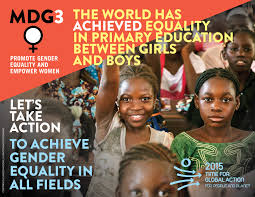
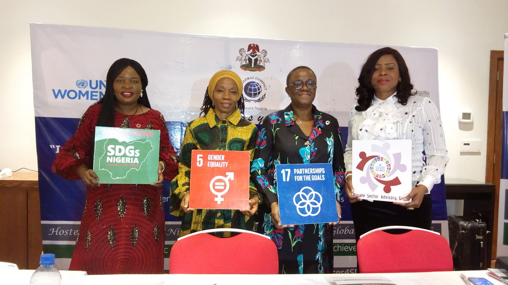

1 / 3

2 / 3

3 / 3

GOALS OF WOMEN EMPOWERMENT:
Women and girls, everywhere, must have equal rights and opportunity, and be able to live free of violence and discrimination. Women’s equality and empowerment is one of the 17 Sustainable Development Goals, but also integral to all dimensions of inclusive and sustainable development. In short, all the SDGs depend on the achievement of Goal 5. 49 countries lack laws protecting women from domestic violence. Gender equality by 2030 requires urgent action to eliminate the many root causes of discrimination that still curtail women’s rights in private and public spheres. For example, discriminatory laws need to change and legislation adopted to proactively advance equality. Yet 49 countries still lack laws protecting women from domestic violence, while 39 bar equal inheritance rights for daughters and sons. Eliminating gender-based violence is a priority, given that this is one of the most pervasive human rights violations in the world today. Based on data from 87 countries, 1 in 5 women and girls under the age of 50 will have experienced physical and/or sexual violence by an intimate partner within the last 12 months. Harmful practices, such as child marriage, steal the childhood of 15 million girls under age 18 every year. Women do 2.6 times more unpaid care and domestic work than men. While families, societies and economies depend on this work, for women, it leads lower earnings and less time to engage in non-work activities. In addition to equal distribution of economic resources, which is not only a right, but accelerates development in multiple areas, there needs to be a fair balance of responsibility for unpaid care work between men and women.